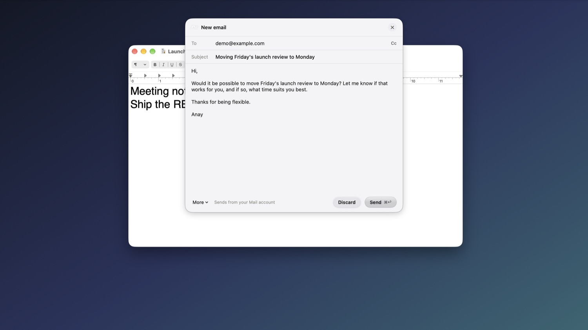
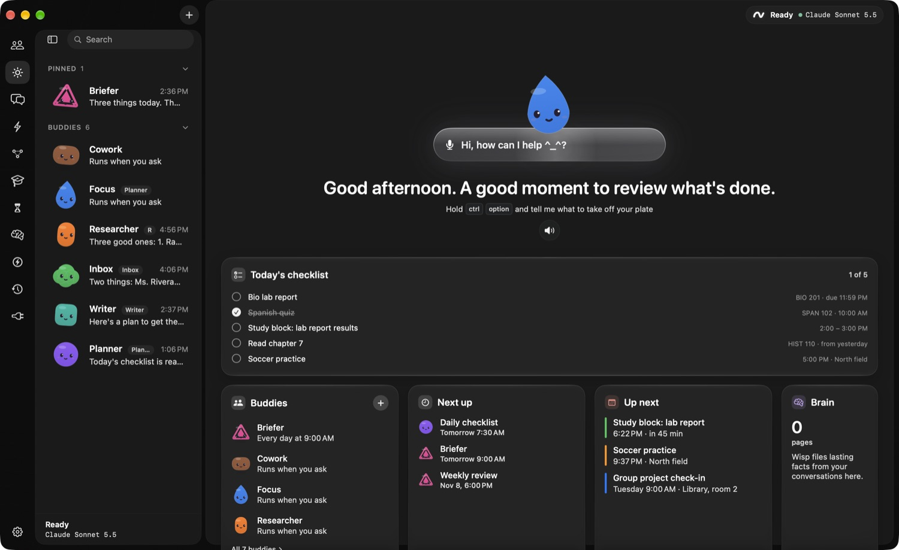
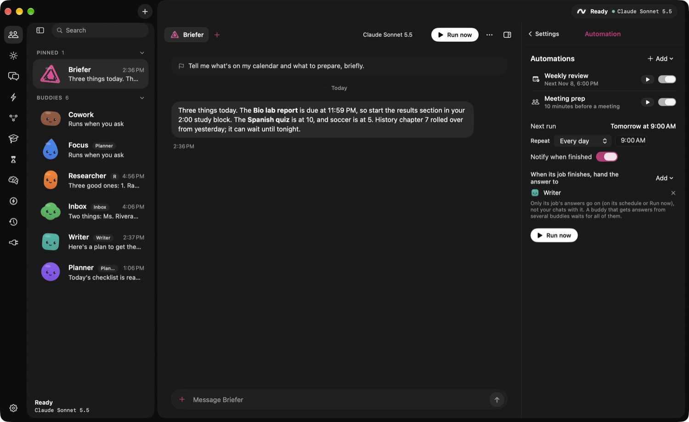
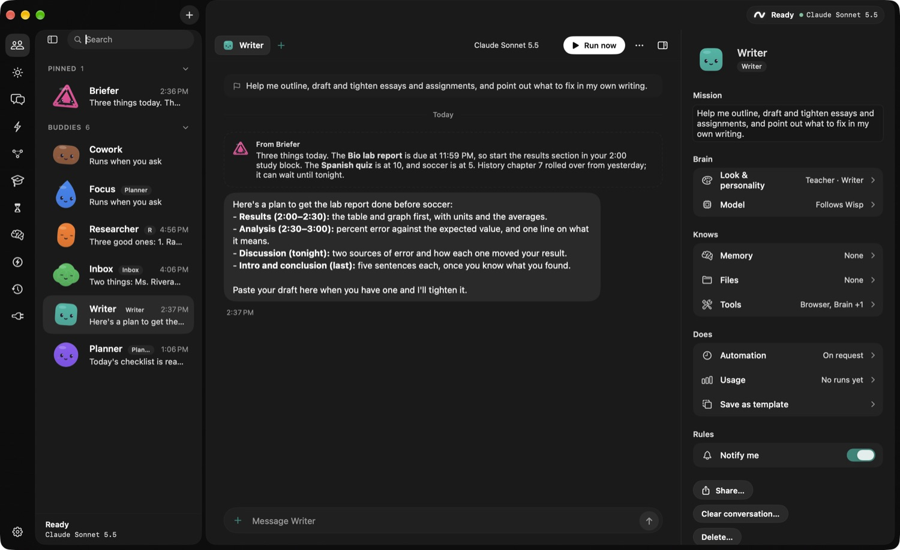
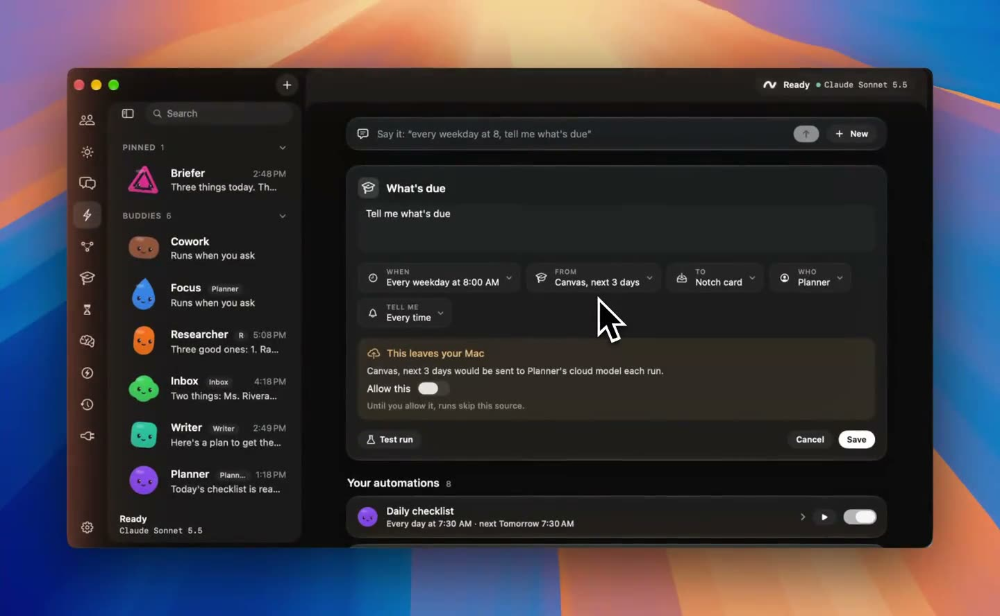
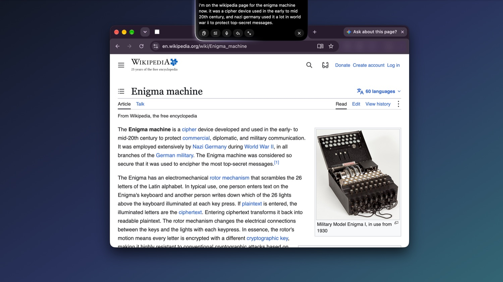
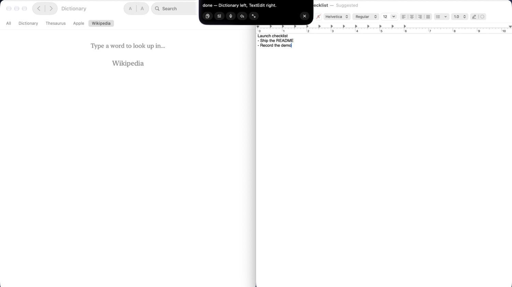
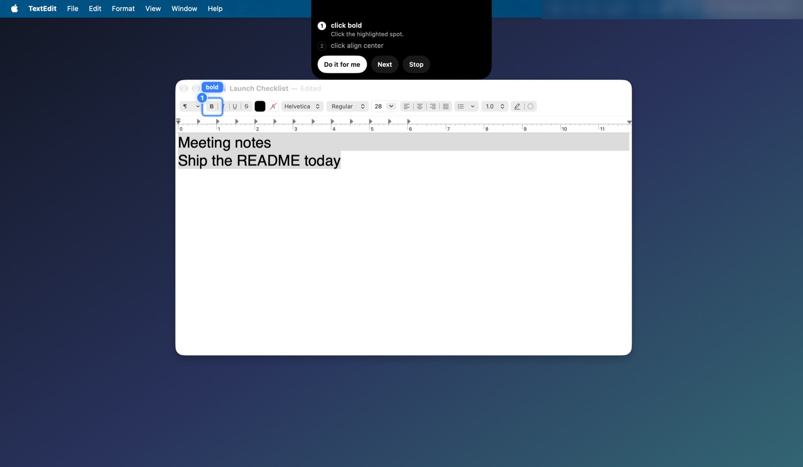
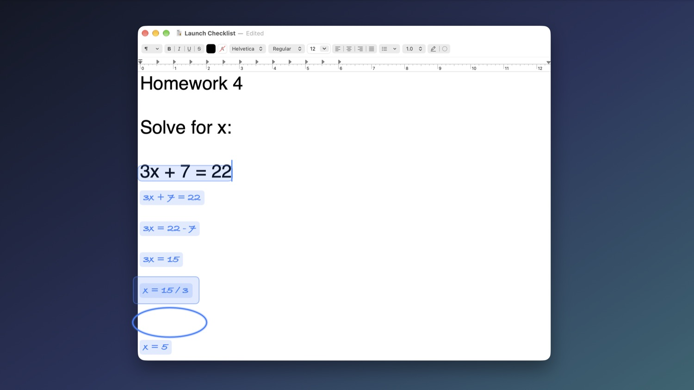

Instant for everyday jobs
Texting, timers, window layouts, tab tidying, music and screen watchers are recognised and run directly. The model only handles what needs thinking.
For Mac · Free · Open source
Hold ⌃⌥ and say it. Wisp drafts the email, runs the browser errand, and keeps a team of buddies working on a schedule. All on your Mac, and it asks before anything leaves.
No account · No API key · No analytics · macOS 26+ on Apple silicon

Texting, timers, window layouts, tab tidying, music and screen watchers are recognised and run directly. The model only handles what needs thinking.
Speech, voice and screen reading run on your Neural Engine. The default model runs locally. Nothing leaves your Mac unless you opt in.
Anything that sends, deletes, pays, posts or runs a command shows a card with exactly what will happen, even with auto-approve on.
Just say it, or tap ⌃⌥ to type. Many of these never touch a model at all.
A day with Wisp
Scroll through one ordinary day. Every screen is the real app.
Canvas deadlines and calendar events become one checklist in Reminders before you're up. Today shows it beside what your buddies are doing and what's coming next.

A buddy on a schedule checks what's on today and writes three lines on what matters. No prompt, no tab to open.

The Writer gets the brief on its own and turns the lab report into a plan you can follow between classes.

“Every weekday at 8, tell me what's due.” Wisp turns it into an automation card you can check before saving, and says plainly when something would leave your Mac.

“Draft an email to Sam about moving Thursday's session.” A finished draft opens, addressed from Contacts. Nothing leaves until you press Send.
“Open Wikipedia and search for the Enigma machine.” Wisp works in its own tab, never yours, and tells you where it landed.

“Put Dictionary on the left and TextEdit on the right.” Done in a tenth of a second, with no model call.

Wisp turns how-to answers into steps on your real screen, ticks them off as you click, and can click for you.

Point it at a problem and it writes the working beside it, line by line, then lets you step through.

While you're away
Each buddy owns one job, with its own chat, memory, model and tools. They run on a schedule, hand their results to each other, and only interrupt you when something needs your OK.
When one buddy finishes its job, the buddies you picked get the answer and start on their own. A buddy with several inputs waits for all of them.
A buddy can ask up to four teammates at once, split work into side threads, or draft a new teammate. Making one always needs your OK.
Every chat with a buddy runs on its own. Send a message mid-job and it can steer the work in progress instead of waiting.
If a model hits a limit or goes down before answering, the next one takes over. A backup that leaves your Mac is flagged as such.
Run a buddy on your Claude subscription with a kept Claude Code session per conversation, started fresh when it fills up.
Every 20 messages a buddy reviews what it remembered and fixes it. Notes you wrote are never touched.
What it does
34 things Wisp does today. Pick a kind to narrow it down.
An editable draft, addressed from Contacts. Nothing sends until you press Send.
“Text mom I'm running late” finds the right person and shows the message first.
Works through pages in its own tab and asks before anything irreversible.
Groups tabs by site or topic and closes duplicates.
Halves, quarters, thirds, maximize, next display. No model call.
“Set a timer for 25 minutes.” “Pause the music.” Instantly.
Runs your Shortcuts by name, always with your OK.
Clicks and types in Mac apps through cua-driver, with each action shown first.
A labelled marker on the control you asked about, in about a tenth of a second.
Steps on your live screen, ticked off as you click, or done for you.
Handwritten steps beside a problem, one line at a time. Save it as a PNG.
Explanations on movable cards you can ask follow-ups on.
Drag a box around anything, or say “explain option C”.
“Tell me when the build finishes.” A notification when it does.
Weather, places nearby, calendar, reminders and timers, right in the notch.
Your Canvas deadlines in a Wisp calendar, synced every hour.
Due dates and events in Reminders, with unfinished items rolled over.
Focus time proposed in your free gaps. Nothing is written without your OK.
A focus timer in the notch that hides distracting apps and sites.
Say it, pick a template, or save an answer. Runs on a schedule or an event.
Named agents with their own job, chat, memory, model and tools.
One buddy's finished answer starts the next.
Ask several buddies at once, or split work into side threads.
Several buddies in one chat. @name picks who answers.
Draw buddies, conditions and approvals as a flow on a canvas.
If a model is down or out of credit, the next one takes over.
A local wiki in Obsidian format, built from your files and conversations.
Each buddy keeps its own notes and tidies them. Yours are never touched.
Save a finished task and replay it later without the model.
Tokens and cost per turn. Counts only, never content.
Ollama, Apple on-device, Claude, GPT, Gemini, Grok or OpenRouter.
MCP servers and Composio for Gmail, GitHub, Notion and more.
Hold ⌃⌥⇧ to type by voice into any app, on-device.
Double-tap ⌃ and talk without holding a key.
How it works
From any app. Tap instead to type, or double-tap ⌃ for hands-free. Your words are transcribed on the Neural Engine, in 25 languages.
Rigid requests run directly. Everything else goes to your model with a small screenshot, the Accessibility tree and on-screen text.
Answers appear in the notch, drafts open, buddies and tools get to work. Anything irreversible waits for your OK.
Privacy
By default, nothing about your screen, voice or words leaves this machine.
The default model runs on your Mac through Ollama. Brain pages are plain markdown files on your disk.
Claude, GPT and Gemini are bring-your-own-key, or use your Claude subscription. Wisp labels clearly when a screenshot would leave your Mac.
No account, no analytics code, no telemetry. Keys and feed URLs live in your login Keychain. The usage log keeps counts, never content.
Your model, your call
Get Wisp
Notarized downloads aren't published yet, so for now you build it once in Xcode. It's free and MIT licensed.
# 1. a local model
ollama pull qwen2.5vl:3b
# 2. get Wisp
git clone https://github.com/anaylab/wisp.git
cd wisp
open leanring-buddy.xcodeproj
# 3. pick the leanring-buddy scheme and press ⌘R,
# then hold ⌃⌥ and talkBefore you try it
Yes. Wisp is open source under the MIT license, and the default setup costs nothing to run because the model, speech and voice are all on your Mac. If you choose a cloud model, you pay that provider with your own key or subscription.
By default, nothing. Speech to text, voice, OCR and the local model all run on-device. The only network use by default is a one-time download of the speech models and optional weather and places lookups, which send a place name or query, never a screenshot. If you pick a cloud model, your transcript and screenshots go to that provider, and Wisp says so.
Anything that sends, deletes, pays, posts, invites or runs a command shows a card first, even if you turned on auto-approve, and you can edit the wording before you allow it. Password and payment fields in the browser are refused outright. Scheduled automations only get tools that never prompt.
An Apple-silicon Mac on macOS 26 or later, since the notch uses Liquid Glass. 16 GB of memory is recommended for the local model. You need Xcode 26 to build it.
Pointing, walkthroughs and screen reading work anywhere: native apps through Accessibility and everything else through on-device OCR. Browser control works with Chrome and Safari.
There is no notarized build published yet, and I'd rather say so than point you at something half-finished. Building it takes a few minutes in Xcode, and signed releases are on the way.